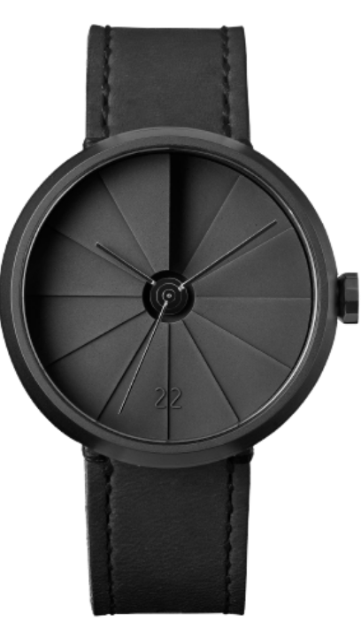

Watch
The watch also features a tough and durable sapphire a Swiss Sellita SW200-1 automatic winding movement that has a power reserve
Buy watch
1700$

Watch
The watch also features a tough and durable sapphire a Swiss Sellita SW200-1 automatic winding movement that has a power reserve
popular